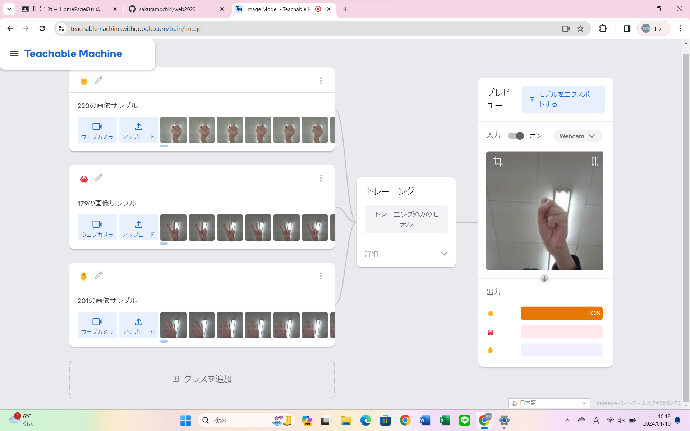
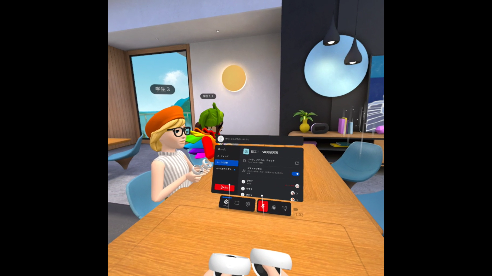

第2週目
2-1 １週目のレポートをHTMLで作る
１週目のレポート
1.内容
htmlを使って１週目のレポートを作成した。
2.感想
先生の用意したものに上書きして作成する形だったため自分で一から作成して同様のものを作れるようになりたいと考えた。
2-2 機械学習体験

1.内容
Teachable MachineでWebカメラを使ってグー、チョキ、パーの三つの手の形を学習させて判別させた。
2.感想
手の形だけでなく手首が出ているかどうかでも判別しているように見えた。
そのためより正確に判別させるには本当に多くの素材が必要なんだと感じた。
2-3 VR（バーチャルリアリティー：Virtual Reality）会議室の体験

1.内容
Meta Quest2を利用し、VR体験をした。
装着後、操作などを確認した後にWorkroomに入った。
2.感想
VRを経験したことがあまりなかったためとても面白くいい体験になった。
画面が実際の首の動きと一致して滑らかに動いていたためそれについて調べたいと考えた。